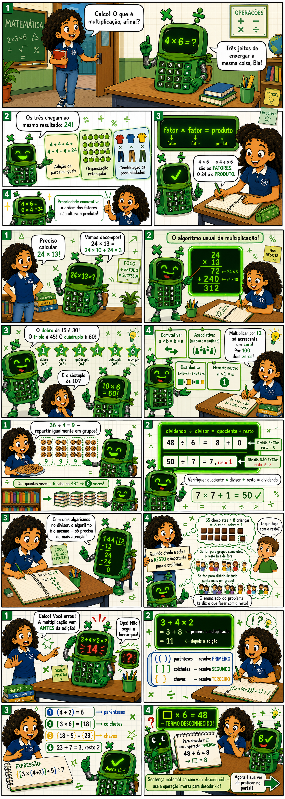
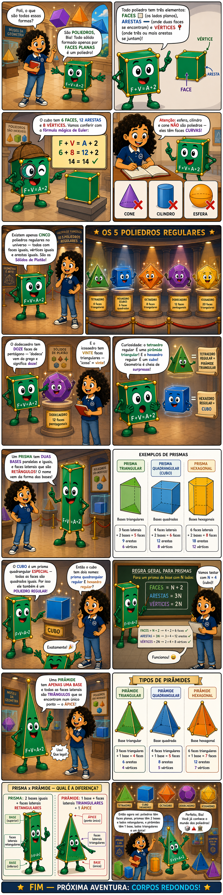
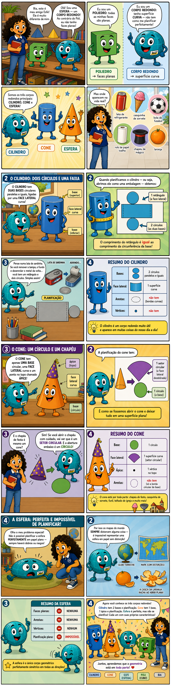
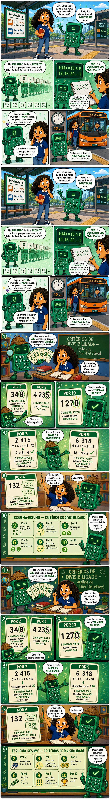
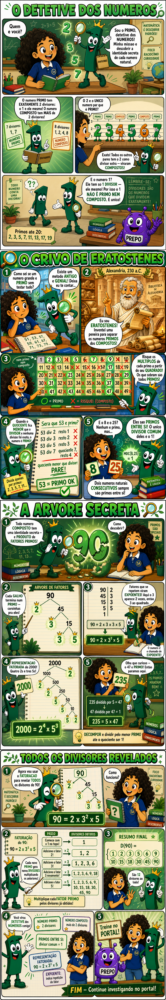
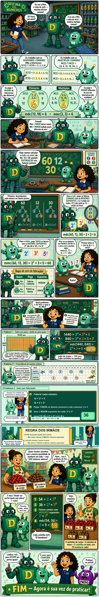

🧠
Como usar essas atividades
Comece pelos Flashcards para identificar os pontos fracos. Depois treine as tabuadas com dificuldade e use o Caça ao Erro como revisão final.
Ordem sugerida
1
🧠 Flashcards — descubra os pontos fracos
2
⏱ Treino Cronometrado — foque nas que errou
3
⚔️ Batalha — pratique com motivação
4
🔍 Caça ao Erro — revisão final
📅 Sugestão de uso semanal
Dia 1
🧠 Flashcards (diagnóstico)
Dia 2
⏱ Treino Cronometrado⚔️ Batalha — múltipla escolha
Dia 3
⚔️ Batalha — sobrevivência🧠 Flashcards (revisão)
Dia 5
⚔️ Batalha — contra o tempo
🤖
Como usar essas atividades
Leia a HQ do Calco para entender o conteúdo. Depois resolva os problemas e contas no papel — use a tela para conferir as respostas.

📖O Segredo das Operações — 4 páginas · Personagens: Bia e Calco · Tema: Multiplicação, Divisão, Expressões e Termo Desconhecido
📅 Sugestão de uso semanal
Dia 1
📖 Ler HQ do Calco❓ Quiz
Dia 2
🧮 Construtor de Expressões
Dia 3
📐 Resolvedor de Problemas
Dia 4
🗺️ Mapa Mental — síntese final
🏛️
Como usar essas atividades
Leia a HQ do Poli para entender os conceitos. Depois faça o Quiz para testar o vocabulário, classifique os sólidos e organize o Mapa Mental como síntese final.

🖼️HQ em breve — gere as imagens com o prompt do Poli!
📖O Mundo dos Poliedros — 4 páginas · Personagens: Bia e Poli · Tema: Poliedros, Poliedros Regulares, Prismas e Pirâmides
📅 Sugestão de uso semanal
Dia 1
📖 Ler HQ do Poli❓ Quiz
Dia 2
🔷 Classificador de Sólidos
Dia 3
🗺️ Mapa Mental — síntese final
🌀
Como usar essas atividades
Leia a HQ do Esfe para entender cilindro, cone e esfera. Depois faça o Quiz, identifique as planificações e organize o Mapa Mental como síntese final.

🖼️HQ em breve — gere as imagens com o prompt do Esfe!
📖O Mundo das Curvas — 4 páginas · Personagens: Bia, Esfe, Cilindro e Cone · Tema: Corpos Redondos e Planificação
📅 Sugestão de uso semanal
Dia 1
📖 Ler HQ do Esfe❓ Quiz
Dia 2
📐 Reconhecedor de Planificações
Dia 3
🗺️ Mapa Mental — síntese final
🖩
Como usar essas atividades
Leia a HQ da Divi para entender múltiplos e divisores. Faça o Quiz, pratique os critérios no Associador e complete o Mapa Mental como síntese final.

🖼️HQ em breve — gere as imagens com o prompt da Divi!
📖A Sequência de Divi — 4 páginas · Personagens: Bia e Divi · Tema: Múltiplos, Divisores e Critérios de Divisibilidade
❓
Quiz Interativo
10 questões sobre múltiplos, divisores, critérios de divisibilidade por 2, 3, 5, 6, 9 e 10.
DigitalMúltipla Escolha
📖 Retrieval practice
🎯
Associador de Critérios
Dado um número, marque todos os critérios de divisibilidade que se aplicam. Feedback com a regra exata do livro.
DigitalCritérios
⚡ Praticar (80%)
✏️
Complete a Lacuna
Complete conjuntos de múltiplos, conjuntos de divisores e as regras dos critérios. 3 seções progressivas.
DigitalCompletar
⚡ Praticar (80%)
🗺️
Mapa Mental
Arraste os balões e conecte múltiplos, divisores, critérios de divisibilidade e suas regras. Compare com o gabarito.
DigitalSíntese
🏆 Ensinar (90%)
📅 Sugestão de uso semanal
Dia 1
📖 Ler HQ da Divi❓ Quiz
Dia 2
🎯 Associador de Critérios
Dia 3
✏️ Complete a Lacuna
Dia 4
🗺️ Mapa Mental — síntese final
🔍
Como usar essas atividades
Leia a HQ do Primo para entender primos, compostos e fatoração. Faça o Quiz, ordene as etapas da fatoração, complete a Missão e organize o Mapa Mental como síntese.

🖼️HQ em breve — gere as imagens com o prompt do Primo!
📖O Detetive dos Números — 4 páginas · Personagens: Bia e Primo · Tema: Primos, Compostos, Crivo de Eratóstenes e Fatoração
📅 Sugestão de uso semanal
Dia 1
📖 Ler HQ do Primo❓ Quiz
Dia 2
🔀 Ordene a Fatoração
Dia 3
🎖️ Missão do Detetive Primo
Dia 4
🗺️ Mapa Mental — síntese final
📐
Como usar essas atividades
Leia a HQ do Máx e Mín para entender mdc e mmc. Faça o Quiz, crie as fatorações no Criador, resolva os problemas no Transformador e finalize com o Mapa Mental.

🖼️HQ em breve — gere as imagens com o prompt do Máx e Mín!
📖Os Irmãos Máx e Mín — 4 páginas · Personagens: Bia, Máx e Mín · Tema: Máximo Divisor Comum, Mínimo Múltiplo Comum e Problemas
📅 Sugestão de uso semanal
Dia 1
📖 Ler HQ do Máx e Mín❓ Quiz
Dia 2
🛠️ Criador de Fatoração
Dia 3
🔄 Transformador de Problemas
Dia 4
🗺️ Mapa Mental — síntese final